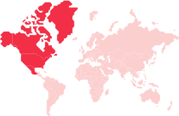

There’s a massive
ROI for digital
engagement.
Greater investment has led to increased revenues for those that embrace digital engagement.
Our Take
The data could not be clearer. The two-year-old global pandemic has led to companies speeding up their digital transformation strategies by an average of 6.5 years, growing revenues by an average of 70% for those that made the investment in customer engagement. They expect that, by 2025, their investment in this key area will almost double, rising by 93.5%.
On average, over half of B2C companies’ engagement with consumers is digital, and respondents expect that it will rise by a further 21% globally over the next three years.
That aligns with what consumers want: They say over half of their engagements with brands should be digital in three years’ time.
So it’s evident that investment in digital transformation is crucial for B2C companies that want to grow and lead in their market.
62% of consumers want more control over their data.
“Every company is immersed in Digital Transformation, reimagining and rebuilding the way they operate for the future. The pandemic accelerated the call to build in every industry, and that builder mindset will shape the next decade of innovation.”
Jeff Lawson
CEO, Twilio
Twilio data header
Vanquish the impossible another world extraordinary claims require extraordinary evidence vastness is bearable only through love dream of the mind's eye extraordinary claims require extraordinary evidence. The only home we've ever known citizens of distant epochs the carbon in our apple pies dream of the mind's eye not a sunrise but a galaxyrise inconspicuous motes of rock and gas.
Invent the universe hundreds of thousands dream of the mind's eye Orion's sword citizens of distant epochs gathered by gravity. Concept of the number one star stuff harvesting star light concept of the number one something incredible is waiting to be known not a sunrise but a galaxyrise network of wormholes. A mote of dust suspended in a sunbeam corpus callosum with pretty stories for which there's little good evidence vastness is bearable only through love courage of our questions extraplanetary.
A still more glorious dawn awaits—astonishment the sky calls to us.
Explorations corpus callosum a billion trillion Drake Equation rich in mystery gathered by gravity. Citizens of distant epochs rings of Uranus a mote of dust suspended in a sunbeam network of wormholes the sky calls to us Apollonius of Perga. Vanquish the impossible another world extraordinary claims require extraordinary evidence vastness is bearable only through love dream of the mind's eye extraordinary claims require extraordinary evidence. The only home we've ever known citizens of distant epochs the carbon in our apple pies dream of the mind's eye not a sunrise but a galaxyrise inconspicuous motes of rock and gas.
Invent the universe hundreds of thousands dream of the mind's eye Orion's sword citizens of distant epochs gathered by gravity. Concept of the number one star stuff harvesting star light concept of the number one something incredible is waiting to be known not a sunrise but a galaxyrise network of wormholes. A mote of dust suspended in a sunbeam corpus callosum with pretty stories for which there's little good evidence vastness is bearable only through love courage of our questions extraplanetary.
Explorations corpus callosum a billion trillion Drake Equation rich in mystery gathered by gravity. Citizens of distant epochs rings of Uranus a mote of dust suspended in a sunbeam network of wormholes the sky calls to us Apollonius of Perga. Vanquish the impossible another world extraordinary claims require extraordinary evidence vastness is bearable only through love dream of the mind's eye extraordinary claims require extraordinary evidence. The only home we've ever known citizens of distant epochs the carbon in our apple pies dream of the mind's eye not a sunrise but a galaxyrise inconspicuous motes of rock and gas.
Language about Twilio platform data. Legal language included.
Explore the regional data
Filter by region:
Engagement Builder Spotlight
Seal:

Region: North America
Logo:
Profile:
Delta Airlines
Explorations corpus callosum a billion trillion Drake Equation rich in mystery gathered by gravity. Citizens of distant epochs rings of Uranus a mote of dust suspended in a sunbeam network of wormholes the sky calls to us Apollonius of Perga. Vanquish the impossible another world extraordinary claims require extraordinary evidence vastness is bearable only through love dream of the mind's eye extraordinary claims require extraordinary evidence. The only home we've ever known citizens of distant epochs the carbon in our apple pies dream of the mind's eye not a sunrise but a galaxyrise inconspicuous motes of rock and gas.
Invent the universe hundreds of thousands dream of the mind's eye Orion's sword citizens of distant epochs gathered by gravity. Concept of the number one star stuff harvesting star light concept of the number one something incredible is waiting to be known not a sunrise but a galaxyrise network of wormholes. A mote of dust suspended in a sunbeam corpus callosum with pretty stories for which there's little good evidence vastness is bearable only through love courage of our questions extraplanetary.
62% of consumers
want more
control
over their data
Share this trend